Human Ecology
Basic Concepts for Sustainable Development
Author: Gerald G. Marten
Publisher: Earthscan Publications
Publication Date: November 2001, 256 pp.
Paperback ISBN: 1853837148
Hardback SBN: 185383713X
Chapter 2: Populations and Feedback Systems
- Exponential population growth
- Positive feedback
- Negative feedback
- Population regulation
- The practical significance of positive and negative feedback
- Things to think about
Why do environmental problems sometimes appear so suddenly? The explanation lies with positive and negative feedback - powerful forces that shape the behaviour of all biological systems from cells to social systems and ecosystems. Feedback is the effect that change in one part of an ecosystem or social system has on the very same part after passing through a chain of effects in other parts of the system. Negative feedback provides stability. All ecosystems and social systems have hundreds of negative feedback loops that keep every part of the system within the bounds necessary for the whole system to continue functioning properly. Positive feedback stimulates change. Positive feedback is responsible for the sudden appearance of environmental problems and many other rapid changes in the world around us.
An ecosystem’s biological community consists of populations of every species of plant, animal and microorganism in the ecosystem. People interact directly or indirectly with populations whenever they interact with ecosystems. This chapter explains how positive feedback causes populations to increase rapidly when there is a surplus of resources. It also explains how negative feedback restrains the population of every species in a biological community within limits that the ecosystem can support.
Exponential Population Growth
A simple story about exponential population growth can show why environmental problems sometimes appear so suddenly. Water hyacinth is a floating plant that has spread from South America to waterways around the world. It can cover the water so completely that it obstructs the movement of boats.
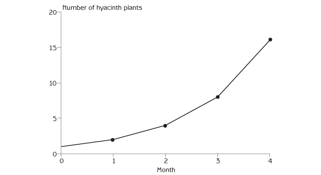
Imagine a lake that is 10 kilometres in diameter. It takes eight billion hyacinth plants to cover a lake of this size completely. To start with, our lake has no water hyacinth. Then we introduce one hyacinth plant onto the lake. After one month, this plant forms two plants. After another month the two plants have multiplied to four (see Figure 2.1), and the doubling continues month after month. Two years pass, and the hyacinths have multiplied to 17 million plants. Nobody pays attention to them because 17 million plants cover only 0.2 per cent of the lake.
Six months later, 30 months after we put the single plant on the lake, there are one billion hyacinth plants, which cover about 13 per cent of the lake (see Figure 2.2). Now people notice the hyacinths. Although there are not enough hyacinth plants to be a problem for the movement of boats, some people are worried. Other people say, ‘Don’t worry. It took a long time to get this many hyacinths. It will be a long time before there are enough to cause a problem.’ Which people are right? Is the problem a long time in the future, or will there be a problem soon? In fact, with hyacinth doubling every month, the lake will be completely covered after only three more months (see Figure 2.3).
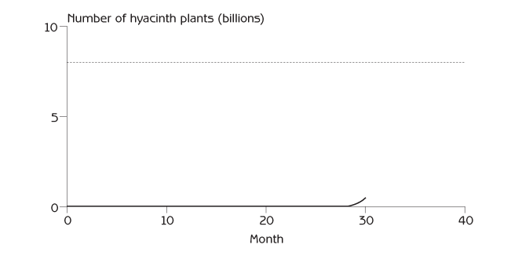
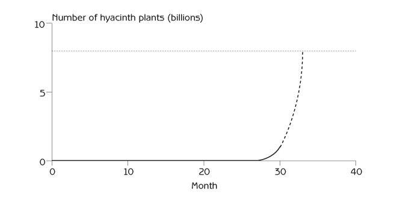
This is a true story. Water hyacinth has become an uncontrollable nuisance in many places, including the world’s second largest lake - Lake Victoria in East Africa - where fish from the lake are a major source of animal protein for millions of people. Parts of Lake Victoria are now so badly clogged with water hyacinth that fishing boats cannot move through the water. Thousands of fishermen are out of work, and the supply of fish has declined drastically.
The water hyacinth story is about floating plants on a lake, but it is also about the human population on planet Earth. The rapid filling of the lake with water hyacinths after their population became noticeable is comparable to the exponential population growth that is now filling the planet with humans. The Earth’s carrying capacity for humans may be about eight billion people; the planet’s human population is already six billion. No one knows exactly how many people the Earth can support on a sustainable basis. Its carrying capacity for humans depends on technology, including future technology. It also depends on the impacts of human activities on ecosystems, activities that for the first time are happening intensively on a global scale. Nonetheless, the basic implication of the water hyacinth story for the human population is the same whether the Earth’s carrying capacity is six billion, eight billion, ten billion or even somewhat more.
Positive Feedback
The water hyacinth story is an example of positive feedback - a circular chain of effects that increases change. Many changes in ecosystems appear to be sudden because of positive feedback. When part of a system increases, another part of the system changes in a way that makes the first part increase even more. There is positive feedback whenever A has a positive effect on B, and B has a positive effect on A (see Figure 2.4). Positive feedback is a source of instability; it is a force for change.
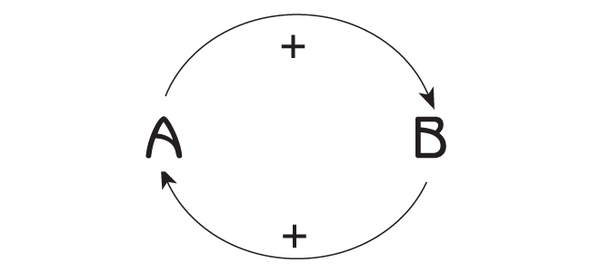
Exponential growth is an example of positive feedback (see Figure 2.5). Exponential population growth occurs when there is a surplus of food, space and other resources that allows a plant or animal population to grow without limit. More population leads to more births, and more births lead to an increasing population. The water hyacinth story is not just about floating plants in a lake. It illustrates how the exponential growth of human populations in recent years, and the exponential growth in natural resource use and pollution due to industrialization, can suddenly reach the limits of ecosystems to provide the resources and absorb pollution.
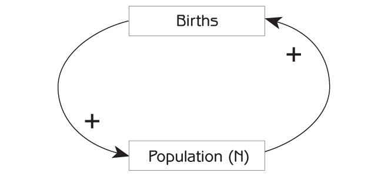
Positive feedback increases change, but it does not always cause an increase. If a change is downward, positive feedback can make the downward change even greater. This can happen with populations. When the number of animals in the population of an endangered species becomes so small that it is difficult for the animals to find mates, births are fewer and the population decreases. The decrease in population makes it even more difficult to find mates, and the population decreases even more. Positive feedback causes a decline in population that leads to extinction.
Positive feedback does not happen only in plant and animal populations. It is common in human social systems. Mutual stimulation of friendly or antagonistic relations between individuals or groups is an example of positive feedback. Undesirable positive feedback is called a ‘vicious cycle’. The Cold War arms race between the United States and the former Soviet Union provides an example of positive feedback. When the United States developed more and better weapons, the former Soviet Union was alarmed by the increase in American military strength and was stimulated to develop more and better weapons. The United States, alarmed by the increase in Soviet military strength, developed even more weapons. Positive feedback caused an ascending spiral of weapons in both countries. The process reversed when the Cold War ended, and the United States and former Soviet Union agreed to fractionally reduce their weapons. Though international arms reduction has been a very complex process, a major part of the story has been reciprocal stimulation of the United States and former Soviet Union to progressively reduce the quantity of weapons that they have directed against each other. Just as the ascending spiral was due to positive feedback, the descending spiral has also been due to positive feedback.
An example of positive feedback that causes one thing to replace another
Positive feedback can cause one thing to increase and another thing to decrease. When there is competition between two parts of a system, positive feedback causes one part to replace the other. The victory of VHS videocassettes over Betamax is a good example. Twenty-five years ago, when videocassette recorders (VCRs) were first placed on the market, there were two completely different electronic systems for the VCRs. The systems were VHS and Betamax, and they were not compatible with each other. Only VHS tapes could be used on VHS recorders, and only Betamax tapes could be used on Betamax recorders.
The public did not know which system to choose because the cost and quality of each was about the same. As a consequence, some people purchased VHS recorders, and others purchased Betamax recorders. At first, about half the people had VHS, and the other half had Betamax, so about half of the movie video tapes at video stores were VHS tapes, and about half were Betamax tapes. This situation continued for several years. Then the number of VHS recorders and VHS tapes started to grow exponentially, and the number of Betamax recorders and Betamax tapes declined equally rapidly. Betamax disappeared, and everyone now uses VHS.
Why did VHS win the competition? Figure 2.6 shows what happened. The big change started when slightly more than half the people had VHS recorders. Movie companies then made more movie video tapes with the VHS system because more people had VHS recorders and therefore bought VHS tapes. More people then selected VHS when purchasing a new video recorder, because more movies were available on VHS tape. As a consequence, there were even more VHS recorders and fewer Betamax recorders, so the movie companies put even more movies on VHS tapes and fewer on Betamax tapes. In other words, an increase in VHS had a chain of effects through the system that caused VHS to increase even more, and a decrease in Betamax had a chain of effects through the system that caused Betamax to decrease even more. These were the positive feedback loops that carried VHS to victory and caused Betamax to disappear.
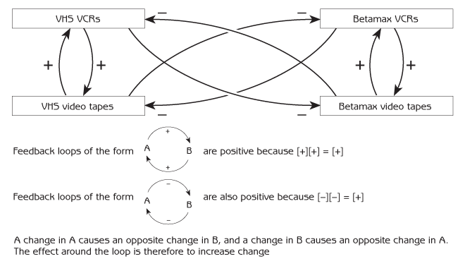
Negative Feedback
Negative feedback is a circular chain of effects that opposes change. It keeps things the same. When part of a system changes too much from what it should be, other parts of the system change in a way that reverses the change in the first part. The function of negative feedback is to keep the parts of a system within limits that are necessary for survival. Negative feedback is a source of stability; it is a force against change.
Homeostasis is an example of negative feedback in biological systems. Homeostasis is control of an organism’s internal physical and chemical condition within limits required for the organism’s survival. Figure 2.7 shows how negative feedback is used to control human body temperature.
If body temperature increases above 37° Celsius, negative feedback reduces the body temperature by:
- reducing metabolic heat generation; and
- increasing heat loss from the body (more blood supply to the skin and more sweating).
If body temperature decreases below 37° Celsius, negative feedback increases the body temperature by:
- increasing heat generation (shivering); and
- decreasing heat loss (less blood supply to the skin and less sweating).
Keeping the body temperature close to 37° Celsius is essential for a person’s survival.
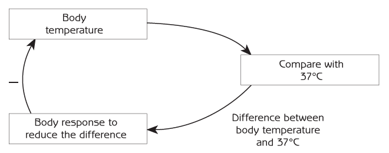
Negative feedback is common in social systems. For example, people use negative feedback to drive a car. If the car starts to go off the road, you steer it in the opposite direction to bring it back onto the road. In other words, when the trajectory starts to change, your negative feedback as a driver reverses the change by bringing the car back. Engineers use negative feedback for machines. If an aeroplane starts to descend toward the ground when it should not, the ‘automatic pilot’ in the aeroplane makes it go upward so it stays at the correct altitude.
Population Regulation
Imagine a forest that has no deer. Then one male and one female deer come to the forest. After one year they have two fawns. A year later the young deer are old enough to reproduce, and each pair produces two more fawns. The deer population continues to double each year, and after ten years there are 1000 deer. Deer need plenty of food to grow and produce offspring. However, there is not as much food as before, because the larger numbers of deer are eating so much of it. The deer are less healthy, more susceptible to disease and sometimes die at a young age because they do not have enough food. Moreover, a malnourished deer may produce only one fawn instead of two.
This story tells us that deer are limited by their food supply:
- When population increases, the food supply decreases.
- When population decreases, the food supply increases.
- When the food supply increases, births increase and deaths decrease.
- When the food supply decreases, births decrease and deaths increase.
- Therefore, when population increases, the food supply decreases, the birth rate (birthsvpopulation) decreases and the death rate (deathsvpopulation) increases.
- When population decreases, the food supply increases, birth rate increases and death rate decreases.
Population regulation and carrying capacity
The story of the deer is the story of all plants and all animals, including people. Why do plants and animals have the abundance that they have? Why aren’t there more? Or less? The explanation is population regulation. Population regulation uses negative feedback to keep plant and animal populations within the limits of the carrying capacity of their environment. Carrying capacity is the population that the food supply in the environment will support on a long-term (sustainable) basis. Because the resources that sustain populations are limited, no population can exceed the carrying capacity of its environment for long.
Figure 2.8 shows how positive and negative feedback affect a population. With the positive feedback loop, an increase in the population leads to more births, which increases the population even more. With the negative feedback loop, an increase in the population reduces the food supply. Less food means more deaths and fewer births.
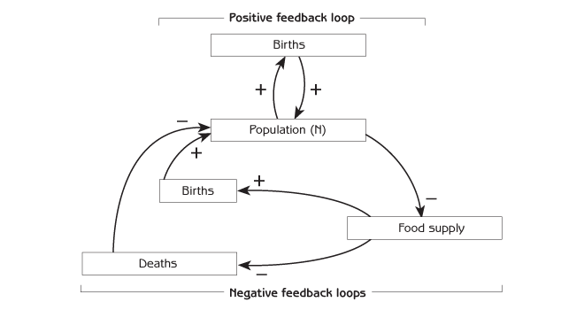
Figure 2.9 shows how negative feedback regulates a population near carrying capacity. If the number of plants or animals in a population is less than carrying capacity, births are greater than deaths and the population increases until it reaches carrying capacity. If the population is larger than carrying capacity, deaths are greater than births, and the population decreases until it reaches carrying capacity. Once a population is close to carrying capacity, births are more or less equal to deaths, and the population does not change much.
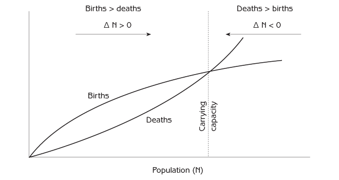
Returning to the story of the deer, Figure 2.10 shows what happened to the deer population during the first ten years. DN/Dt (the change in the deer population each year) is small during the first few years, when the deer population is small. DN/Dt is larger in the ninth year when the deer population is much larger. The population growth curve is exponential because of positive feedback, but exponential growth cannot continue forever. What will happen during the next 20 years?
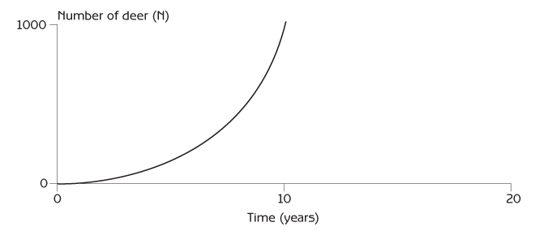
An S-shaped ‘sigmoid’ curve for population growth (shown in Figure 2.11) is what usually happens when deer or any other plants or animals start a population in a new place. The exponential growth in the first part of the sigmoid curve is followed by population regulation as the number of plants or animals approaches carrying capacity and negative feedback takes over. In many instances a population increases gradually and then fluctuates in the vicinity of carrying capacity (the solid curve in Figure 2.11). It does not stay precisely at carrying capacity because:
- negative feedback is not highly precise; and
- other factors besides food supply can have an impact on births and deaths.
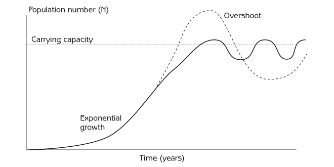
Sometimes a population grows so rapidly that it overshoots carrying capacity before negative feedback can stop the increase (the dashed curve in Figure 2.11). If a population overshoots, it usually depletes its food so severely that negative feedback in the form of more deaths and fewer births quickly reduces it below carrying capacity.
The Practical Significance of Positive and Negative Feedback
Every ecosystem and human social system has numerous positive and negative feedback loops. Both kinds of feedback are essential for survival. Negative feedback provides stability; it keeps important parts of the system within the limits required for proper functioning. Positive feedback provides the capacity to change drastically when necessary. The development and growth of all biological systems - from cells and individual organisms to ecosystems and social systems - is based on the interplay of positive and negative feedback. Ecosystems and social systems can stay more or less the same for long periods, but sometimes they change dramatically and rapidly. They function best when they have an appropriate balance between the forces that promote change and the forces that provide stability.
People constantly interact with these forces of change and stability. People depend upon negative feedback to ‘take care of things’ and keep everything functioning smoothly most of the time. When people try to improve their situation (‘development’ or ‘solving problems’), they use positive feedback to help make the changes they want. However, in addition to working for people, positive and negative feedback can also work against them. Sometimes people try to improve things or solve a problem, and no matter what they do, there is no improvement because they are working against negative feedback that prevents the changes that they want. Other times, people prefer things to stay the way they are, but positive feedback amplifies seemingly harmless actions into changes that they do not want. If we pay attention to the positive and negative feedbacks in our social systems and ecosystems, we can use the feedbacks to our advantage instead of struggling against them. In the case of ecosystems, this means fitting our activities with ecosystems to do things ‘nature’s way’, so nature does most of the work and keeps things going. The concrete meaning of ‘doing things nature’s way’ will become more apparent in subsequent chapters.
Things to Think About
- Think of examples of positive feedback at different levels of social organization in your social system: family and friends, neighbourhood, city, national, and international. Draw diagrams to show circular chains of effects (ie, feedback loops). Do some of the feedback loops generate sudden changes?
- Think of examples of replacement of one thing by another in your social system or ecosystem during recent years. Draw a diagram to show the chain of effects and feedback loops that generated the replacement.
- Think of examples of negative feedback at different levels of social organization in your social system. Draw diagrams to show the circular chains of effects.
- Figure 2.10 shows what happened to the deer population during the first 10 years in the “story of the deer”. Compare DN/Dt in the first year (when the deer population is small) with DN/Dt in the tenth year (when the deer population is much larger). At which time is DN/Dt larger? What kind of population change does this graph show during the first ten years? Does positive feedback or negative feedback dominate the form of the graph when the population is small? Will the same kind of population change continue forever? Draw the graph in Figure 2.10 to show what you think will happen during the next twenty years. Is negative feedback important when the deer population is small or when it is large?
- Think of examples in your nation or community that illustrate:
- using positive feedback to make desired changes;
- positive feedback that generates undesirable changes despite efforts to stop the change;
- negative feedback that keeps things the way people want them to be;
- negative feedback that obstructs efforts to change things that people consider undesirable.